NCERTap Solutions for Class 11 Physics Chapter 7 System of Particles and Rotational Motion are part of Class 11 Physics NCERT Solutions. Here we have given NCERT Solutions for Class 11 Physics Chapter 7 System of Particles and Rotational Motion.
NCERT Solutions for Class 11 Physics Chapter 7 System of Particles and Rotational Motion
Topics and Subtopics in NCERT Solutions for Class 11 Physics Chapter 7 System of Particles and Rotational Motion:
NCERT Solutions Class 11 PhysicsPhysics Sample Papers
QUESTIONS FROM TEXTBOOK
Question 7. 1. Give the location of the centre of mass of a (i) sphere, (ii) cylinder, (iii) ring, and (iv) cube, each of uniform mass density. Does the centre of mass of a body necessarily lie inside the body?
Answer: In all the four cases, as the mass density is uniform, centre of mass is located at their respective geometrical centres.
No, it is not necessary that the centre of mass of a body should lie on the body. For example, in case of a circular ring, centre of mass is at the centre of the ring, where there is no mass.
Question 7. 2. In the HCl molecule, the separation between the nuclei of the two atoms is about 1.27 A (1 A = 10-10m). Find the approximate location of the CM of the molecule, given that a chlorine atom is about 35.5 times as massive as a hydrogen atom and nearly all the mass of an atom is concentrated in its nucleus.
Answer: Let us choose the nucleus of the hydrogen atom as the origin for measuring distance. Mass of hydrogen atom,m1= 1 unit (say) Since cholorine atom is 35.5 times as massive as hydrogen atom,
.•. mass of cholorine atom, m2 = 35.5 units
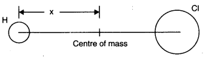
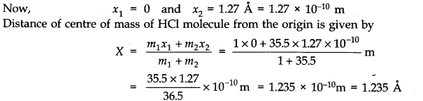
Question 7. 3. A child sits stationary at one end of a long trolley moving uniformly with a speed V on a smooth horizontal floor. If the child gets up and runs about on the trolley in any manner, what is the speed of the CM of the (trolley + child) system?
Answer: When the child gets up and runs about on the trolley, the speed of the centre of mass of the trolley and child remains unchanged irrespective of the manner of motion of child. It is because here child and trolley constitute one single system and forces involved are purely internal forces. As there is no external force, there is no change in momentum of the system and velocity remains unchanged.
Question 7. 4.
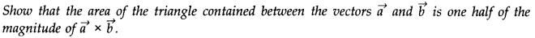
Answer:
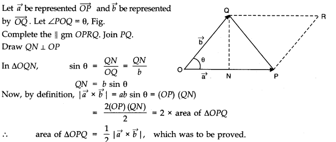
Question 7. 5.
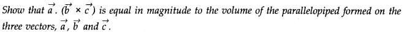
Answer:
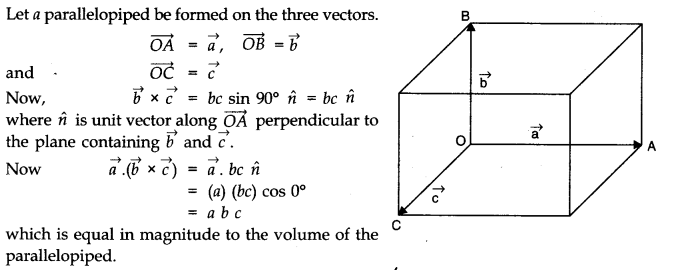
Question 7. 6. Find the components along the x, y, z-axes of the angular momentum l of a particle, whose position vector is r with components x, y, z and momentum is p with components px, py and pz. Show that if the particle moves only in the x-y plane the angular momentum has only a z- component.
Answer:
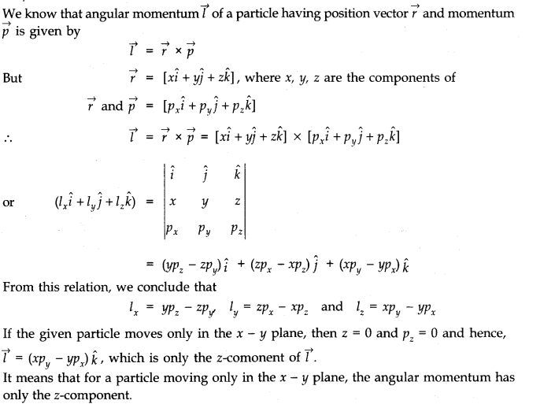
Question 7. 7. Two particles, each of mass m and speed v, travel in opposite directions along parallel lines separated by a distance d. Show that the vector angular momentum of the two particle system the same whatever be the point about which the angular momentum is taken.
Answer:
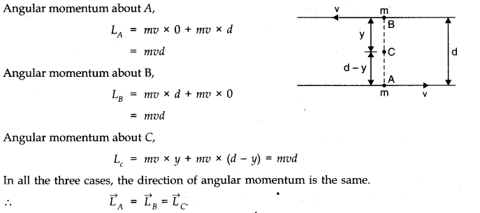
Question 7. 8. A non-uniform bar of weight W is suspended at rest by two strings of negligible weight as shown in Fig. The angles made by the strings with the vertical are 36.9° and ‘ 53.2° respectively. The bar is 2 m long. Calculate the distance d of the centre of gravity of the bar from its left end.
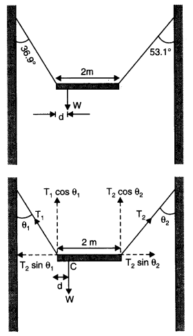
Answer:
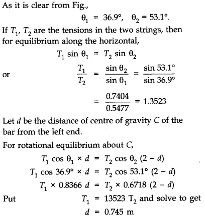
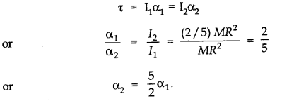
Question 7. 9. A car weighs 1800 kg. The distance between its front and back axles is 1.8 m. Its centre of gravity is 1.05 m behind the front axle. Determine the force exerted by the level ground on each front wheel and each back wheel.
Answer: Let F1 and F2 be the forces exerted by the level ground on front wheels and back wheels respectively.Considering rotational equilibrium about the front wheels,F2 x 1.8 = mg x 1.05 or F2 = 1.05/1.8 x 1800 x 9.8 N =10290 N Force on each back wheel is =10290/2 N or 5145 N.
Considering rotational equilibrium about the back wheels.
F1 x 1.8 = mg (1.8 – 1.05) = 0.75 x 1800 x 9.8
or F1=0.75 x 1800 x 9.8/1.8 = 7350 N
Force on each front wheel is 7350/2 N or 3675 N.
Question 7. 10. (a) Find the moment of inertia of a sphere about a tangent to the sphere, given the moment of inertia of the sphere about any of its diameters to be 2 MR2/5, where M is the mass of the sphere and R is the radius of the sphere.
(b) Given the moment of inertia of a disc of mass M and radius R about any of its diameters to 1 be 1/4 MR2, find the moment of inertia about an axis normal to the disc passing through a point on its edge.
Answer: (a) Moment of inertia of sphere about any diameter = 2/5 MR2
Applying theorem of parallel axes,Moment of inertia of sphere about a tangent to the sphere = 2/5 MR2 +M(R)2 =7/5 MR2
(b) We are given, moment of inertia of the disc about any of its diameters = 1/4 MR2
(i) Using theorem of perpendicular axes, moment of inertia of the disc about an axis passing through its centre and normal to the disc = 2 x 1/4 MR2 = 1/2 MR2.
(ii) Using theorem axes, moment of inertia of the disc passing through a point on its edge and normal to the dies = 1/2 MR2+ MR2 = 3/2 MR2.
Question 7. 11. Torques of equal magnitude are applied to a hollow cylinder and a solid sphere, both having the same mass and radius. The cylinder is free to rotate about its standard axis of symmetry, and the sphere is free to rotate about an axis passing through its centre. Which of the two will acquire a greater angular speed after a given time?
Answer: Let M be the mass and R the radius of the hollow cylinder, and also of the solid sphere. Their moments of inertia about the respective axes are I1 = MR2 and I2 = 2/5 MR2
Let τ be the magnitude of the torque applied to the cylinder and the sphere, producing angular accelerations α1and α2 respectively. Then τ=I1 α1 = I2 α2
The angular acceleration 04 produced in the sphere is larger. Hence, the sphere will acquire larger angular speed after a given time.
Question 7. 12. A solid cylinder of mass 20 kg rotates about its axis with angular speed 100 rad s-1. The radius of the cylinder is 0.25 m. What is the kinetic energy associated with the rotation of the cylinder? What is the magnitude of angular momentum of the cylinder about its axis?
Answer: M = 20 kg
Angular speed, w = 100 rad s-1; R = 0.25 m
Moment of inertia of the cylinder about its axis
=1/2 MR2 = 1/2 x 20 (0.25)2 kg m2 = 0.625 kg m2
Rotational kinetic energy,
Er = 1/2 Iw2 = 1/2 x 0.625 x (100)2 J = 3125 J
Angular momentum,
L = Iw = 0.625 x 100 Js= 62.5 Js.
Question 7. 13. (a) A child stands at the centre of a turntable with his arms outstretched. The turntable is set rotating with an angular speed of 40 rev/min. How much is the angular speed of the child if he folds his hands back and thereby reduces his moment of inertia to 2/5 times the initial value? Assume that the turntable rotates without friction, (b) Show that the child’s new kinetic energy of rotation is more than the initial kinetic energy of rotation. How do you account of this increase in kinetic energy?
Answer: (a) Suppose, initial moment of inertia of the child is I1 Then final moment of inertia,
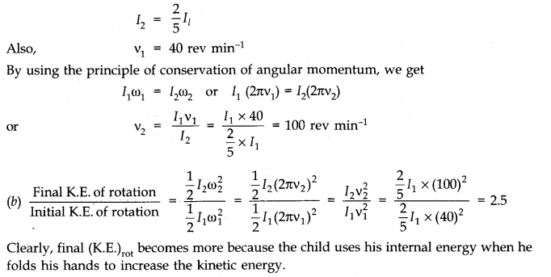
Question 7. 14. A rope of negligible mass is wound round a hollow cylinder of mass 3 kg and radius 40 cm. What is the angular acceleration of the cylinder if the rope is pulled with a force of 30 N? What is the linear acceleration of the rope? Assume that there is no slipping.
Answer: Here, M = 3 kg, R = 40 cm = 0.4 m
Moment of inertia of the hollow cylinder about its axis.
I = MR2 = 3(0.4)2 = 0.48 kg m2
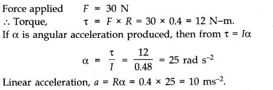
Question 7. 15. To maintain a rotor at a uniform angular speed of 200 rad s-1, an engine needs to transmit a torque of 180 Nm. What is the power required by the engine?
Note: Uniform angular velocity in the absence of friction implies zero torque. In practice, applied torque is needed to counter fricitional torque). Assume that the engine is 100 efficient.
Answer: Here, a = 200 rad s-1; Torque, τ= 180 N-m
Since,Power, P = Torque (τ) x angular speed (w)
= 180 x 200 = 36000 watt = 36 KW.
Question 7. 16. From a uniform disk of radius R, a circular hole of radius R/2 is cut out. The centre of the hole is at R/2 from the centre of the original disc.Locate the centre of gravity of the resulting flat body.
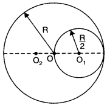
Answer: Let from a bigger uniform disc of radius R with centre O a smaller circular hole of radius R/2 with its centre at O1 (where R OO1 = R/2) is cut out. Let centre of gravity or the centre of mass of remaining flat body be at O2, where OO2 = x. If σ be mass per unit area, then mass of whole disc M1 = πR2σ and mass of cut out part
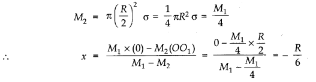
i.e., O2 is at a distance R/6 from centre of disc on diametrically opposite side to centre of hole.
Question 7. 17. A metre stick is balanced on a knife edge at its centre. When two coins, each of mass 5g are put one on top of the other at the 12.0 cm mark, the stick is found to be balanced at 45.0 cm. What is the mass of the metre stick?
Answer: Let m be the mass of the stick concentrated at C, the 50 cm mark, see fig.
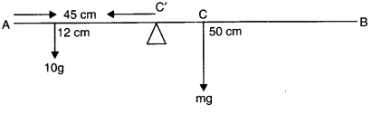
For equilibrium about C, the 45 cm mark,
10 g (45 – 12) = mg (50 – 45)
10 g x 33 = mg x 5
=> m = 10 x 33/5
or m = 66 grams.
Question 7. 18. A solid sphere rolls down two different inclined planes of the same heights but different angles of inclination, (a) Will it reach the bottom with the same speed in each case? (b) Will it take longer to roll down one plane than the other? (c) If so, which one and why?
Answer: (a) Using law of conservation of energy,
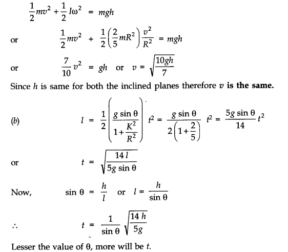
(c) Clearly, the solid sphere will take longer to roll down the plane with smaller inclination.
Question 7. 19. A hoop of radius 2 m weighs 100 kg. It rolls along a horizontal floor so that its centre of mass has a speed of 20 cm/s. How much work has to be done to stop it?
Answer: Here, R = 2 m, M = 100 kg
v = 20 cm/s = 0.2 m/s
Total energy of the hoop =1/2Mv2 + 1/2Iw2
=1/2Mv2 + 1/2(MR2)w2
=1/2Mv2 +1/2Mv2 =Mv2
Work required to stop the hoop = total energy of the hoop W = Mv2 = 100 (0.2)2= 4 Joule.
Question 7. 20. The oxygen molecule has a mass of 5.30 x 10-26 kg and a moment of inertia of 1.94 x 10-45 kg m2 about an axis through its centre perpendicular to the lines joining the two atoms. Suppose the mean speed of such a molecule in a gas is 500 m/s and that its kinetic energy of rotation is two thirds of its kinetic energy of translation. Find the average angular velocity of the molecule.
Answer:
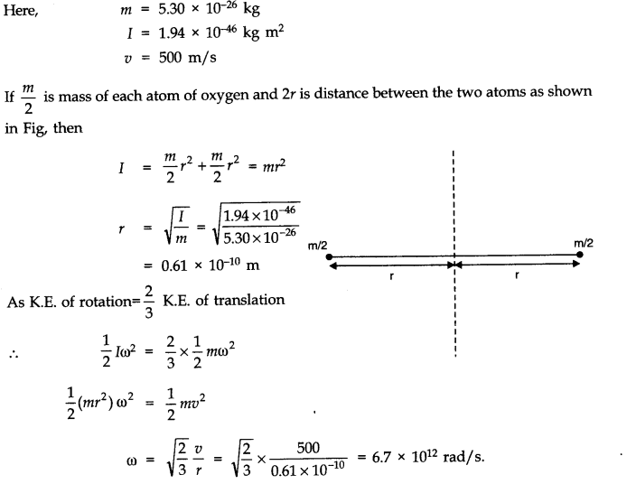
Question 7. 21. A solid cylinder rolls up an inclined plane of angle of inclination 30°. At the bottom of the inclined plane the centre of mass of the cylinder has a speed of 5 m/s.
(a) How far will the cylinder go up the plane?
(b) How long will it take to return to the bottom?
Answer: Here, θ= 30°, v = 5 m/ s
Let the cylinder go up the plane up to a height h.
From 1/2 mv2 +1/2IW2 = mgh
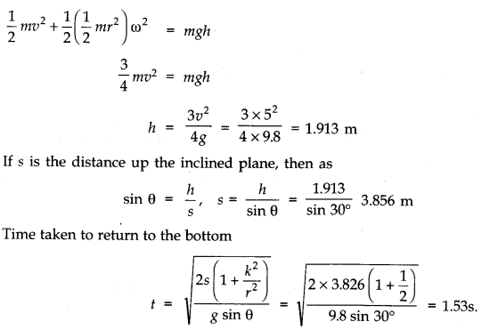
Question 7. 22. As shown in Fig. the two sides of a step ladder BA and CA are 1.6 m long and hinged at A. A rope DE, 0.5 m is tied halfway up. A weight 40 kg is suspended from a point F, 1.2 m from B along the ladder BA. Assuming the floor to be friction less and neglecting the weight of the ladder, find the tension in the rope and forces exerted by the floor on the ladder. (Take g = 9.8 m2 )(Hint: Consider the equilibrium of each side of the ladder separately.)
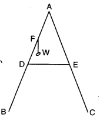
Answer: The forces acting on the ladder are shown in Fig. 7.14.Here, IV = 40 kg = 40 x 9.8 N = 392 N, AB = AC = 1.6 m, BD = 1/2 x 1.6 m = 0.8 m,
BF = 1.2 m and DE 0.5 m,
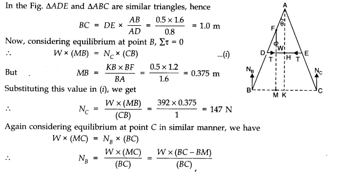
=(392 x (1-0.375))/1=245 N
Now, it can be easily shown that tension in the string T = NB – NC = 245 – 147 = 98 N.
Question 7. 23. A man stands on a rotating platform, with his arms stretched horizontally holding a 5 kg weight in each hand. The angular speed of the platform is 30 revolutions per minutes. The man then brings his arms close to his body with the distance of each weight from the axis changing from 90 cm to 20 cm. The moment of inertia of the man together with the platform may be taken to be constant and equal to 7.6 kg m2.(a) What is his new angular speed? (Neglect friction)(b) Is kinetic energy conserved in the process? If not, from where does the change come about?
Answer: Here, I1= 7.6 + 2 x 5 (0.9)2 = 15.7 kg m2
w1 = 30 rpm
I2 = 7.6 + 2 x 5 (0.2)2 = 8.0 kg m2
w2 = ?
According to the principle of conservation of angular momentum,
I2w2=I1w1
w2= I1/I2 w1= 15.7 x 30 /8.0 = 58.88 rpm
No, kinetic energy is not conserved in the process. In fact, as moment of inertia decreases, K.E. of rotation increases. This change comes about as work is done by the man in bringing his arms closer to his body.
Question 7. 24. A bullet of mass 10 g and speed 500 m/s is fired into a door and gets embedded exactly at the centre of the door. The door is 1.0 m wide and weighs 12 kg. It is hinged at one end and rotates about a vertical axis practically without friction. Find the angular speed of the door just after the bullet embeds into it.(Hint: The moment of inertia of the door about the vertical axis at one end is ML2/3.)
Answer: Angular momentum imparted by the bullet, L = mv x r
=(10 x 10-3) x 500 x 1/2 =2.5
Also,I=ML2/3=12 x (1.0) 2/3=4 kg m2
Since L=Iw
w=L/I=2.5/4=0.625 rad / s
Question 7. 25. Two discs of moments of inertia I1 and I2 about their respective axes (normal to the disc and passing through the centre), and rotating with angular speed w1 and w2 are brought into contact face to face with their axes of rotation coincident, (a) What is the angular speed of the two-disc system? (b) Show that the kinetic energy of the combined system is less than the sum of the initial kinetic energies of the two discs. How do you account for this loss in energy? Take w1 not equal to w2.
Answer: (a) Let I1 and I2 be the moments of inertia of two discs having angular speeds w1, and w2 respectively. When they are brought in contact, the moment of inertia of the two-disc system will be I1 + I2. Let the system now have an angular speed w. From the law of conservation of angular momentum, we know that
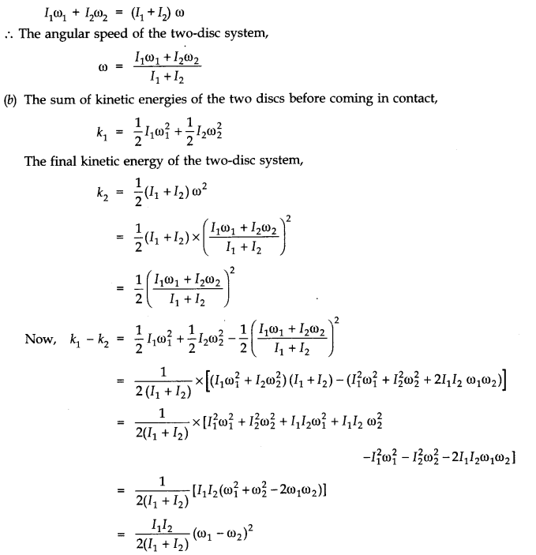
Now, (w1 – w2)2 will be positive whether w1 is greater or smaller than w2.
Also,I1I2/2(I1+ I2) is also positive because I1 and I2 are positive.
Thus, k1– k2 is a positive quantity.
.-. k1 = k2 + a positive quantity or k1 > k2
.-. The kinetic energy of the combined system ( k2) is less than the sum of the kinetic energies of the two dies.The loss of energy on combining the two discs is due to the energy being used up because of the frictional forces between the surfaces of the two discs. These forces, in fact, bring about a common angular speed of the two discs on combining.
Question 7. 26. (a) Prove the theorem of perpendicular axes.
Hint: Square of the distance of a point (x, y) in the x-y plane from an axis through the origin perpendicular to the plane is x2 + y2]
(b) Prove the theorem of parallel axes.
Hint: If the centre of mass of chosen the origin [Σ miri= 0]
Answer: (a) The theorem of perpendicular axes: According to this theorem, the moment of inertia of a plane lamina (i.e., a two dimensional body of any shape/size) about any axis OZ perpendicular to the plane of the lamina is equal to sum of the moments of inertia of the lamina about any two mutually perpendicular axes OX and OY in the plane of lamina, meeting at a point where the given axis OZ passes through the lamina. Suppose at the point ‘R’ m{ particle is situated moment of inertia about Z axis of lamina
= moment of inertia of body about x-axis
= moment of inertia of body about the y-axis.
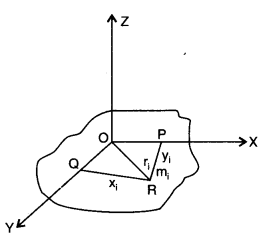
(b) Theorem of parallel axes: According to this theorem, moment of inertia of a rigid body about
any axis AB is equal to moment of inertia of the body about another axis KL passing through
centre of mass C of the body in a direction parallel to AB, plus the product of total mass M of the
body and square of the perpendicular distance between the two parallel axes. If h is perpendicular distance between the axes AB and KL, then Suppose rigid body is made up of n particles m1, m2, …. mn, mn at perpendicular distances r1, r2, ri…. rn. respectively from the axis KL passing through centre of mass C of the body.
If h is the perpendicular distance of the particle of mass m{ from KL, then
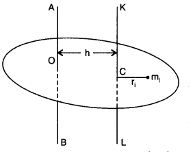
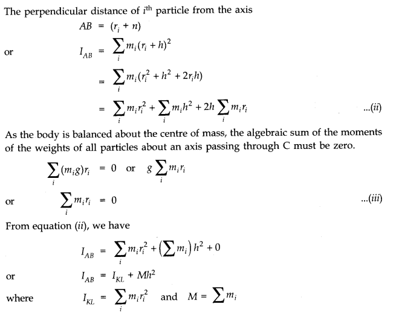
Question 7. 27. Prove the result that the velocity v of translation of a rolling body (like a ring, disc, cylinder or sphere) at the bottom of an inclined plane of a height h is given by,v2=2gh/(1+k2/R2) using dynamical consideration (i.e., by consideration of forces and torques). Note k is the radius of gyration of the body about its symmetry axis, and R is the radius of the body. The body starts from rest at the top of the plane.
Answer: Let a rolling body (I = Mk2) rolls down an inclined plane with an initial velocity u = 0; When it reaches the bottom of inclined plane, let its linear velocity be v. Then from conservation of mechanical energy, we have Loss in P.E. = Gain in translational K.E. + Gain in rotational K.E.
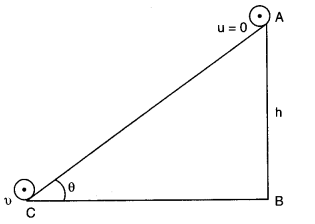
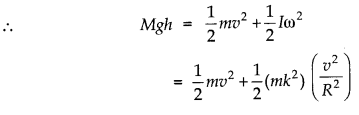
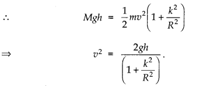
Question 7. 28. A disc rotating about its axis with angular speed wo is placed lightly (without any translational push) on a perfectly friction less table. The radius of the disc is R. What are the linear velocities of the points A, B and C on the disc shown in Fig.? Will the disc roll in the direction indicated?
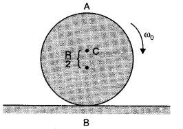
Answer:
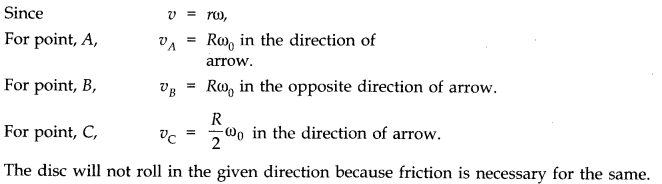
Question 7. 29. Explain why friction is necessary to make the disc roll (refer to Q. 28) in the direction indicated.
(a) Give the direction of frictional force at B, and the sense of frictional torque, before perfect rolling begins.
(b) What is the force of friction after perfect rolling begins?
Answer: To roll a disc, we require a torque, which can be provided only by a tangential force. As force of friction is the only tangential force in this case, it is necessary.
(a)As frictional force at B opposes the velocity of point B, which is to the left, the frictional force must be to the right. The sense of frictional torque will be perpendicular to the plane of the disc and outwards.
(b)As frictional force at B decreases the velocity of the point of contact B with the surface, the perfect rolling begins only when velocity of point B becomes zero. Also, force of friction would become zero at this stage.
Question 7. 30. A solid disc and a ring, both of radius 10 cm are placed on a horizontal table simultaneously, with initial angular speed equal to 10π rad/s. Which of two will start to roll earlier? The coefficient of kinetic friction is uk = 0.2.
Answer: When a disc or ring starts rotatory motion on a horizontal surface, initial translational velocity of centre of mass is zero.
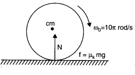
The frictional force causes the centre of mass to accelerate linearly but frictional torque causes angular retardation. As force of normal reaction N = mg, hence frictional force f = uk N = uk mg.
For linear motion f = uk . mg = ma ———-(i)
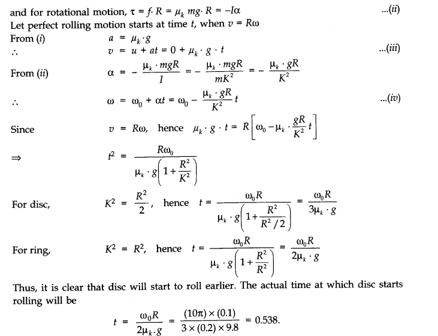
Question 7. 31. A cylinder of mass 10 kg and radius 15 cm is rolling perfectly on a plane of inclination 30°. The coefficient of static friction us = 0.25.
(a) How much is the force of friction acting on the cylinder?
(b) What is the work done against friction during rolling?
(c) If the inclination O of the plane is increased, at what value of 8 does the cylinder begin to skid, and not roll perfectly?
Answer:
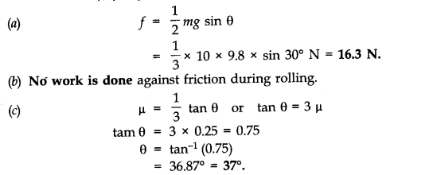
Question 7. 32. Read each statement below carefully, and state, with reasons, if it is true or false:
(a) During rolling, the force of friction acts in the same direction as the direction of motion of the CM of the body.
(b) The instantaneous speed of the point of contact during rolling is zero.
(c) The instantaneous acceleration of the point of contact during rolloing is zero.
(d) For perfect rolling motion, work done against friction is zero.
(e) A wheel moving down a perfectly frictionless inclined plane will undergo slipping (not rolling) motion.
Answer: (a) True. When a body rolls without slipping, the force of friction acts in the same
direction as the direction of motion of the centre of mass of rolling body.
(b) True. This is because rolling body can be imagined to be rotating about an axis passing through the point of contact of the body with the ground. Hence its instantaneous speed is zero.
(c) False. This is because when the body is rotating, its instantaneous acceleration is not zero.
(d) True. For perfect rolling motion as there is no relative motion at the point of contact, hence work done against friction is zero.
(e) True. This is because rolling occurs only on account of friction which is a tangential force capable of providing torque. When the inclined plane is perfectly smooth, it will simply slip under the effect of its own weight.
Question 7. 33. Separation of Motion of a system of particles into motion of the centre of mass and motion about the centre of mass:
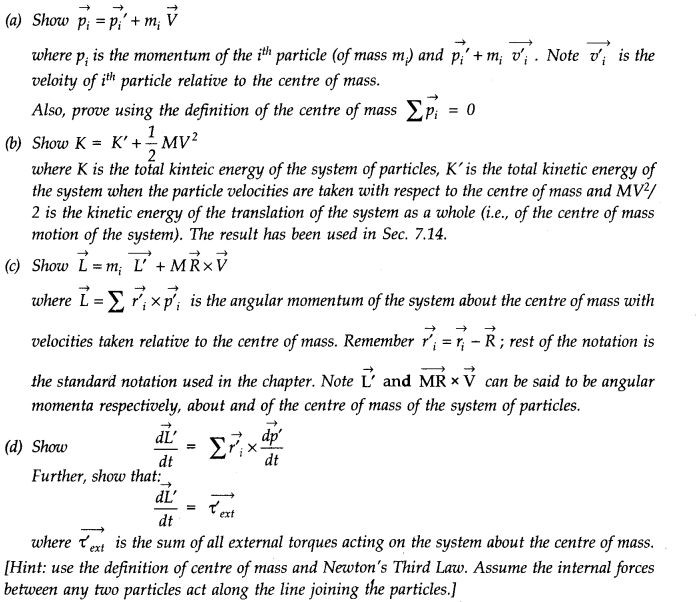
Answer:
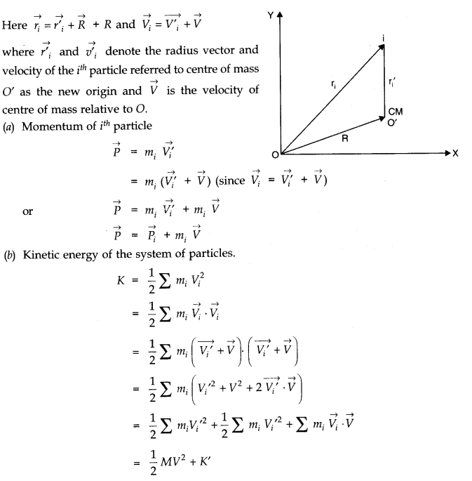
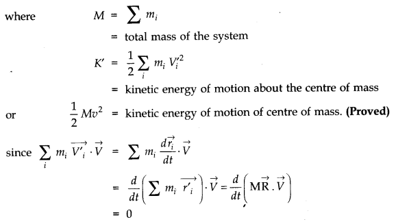

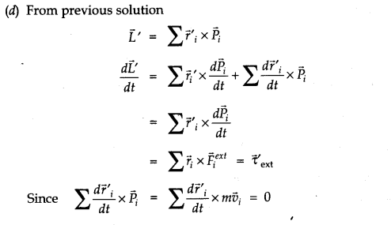
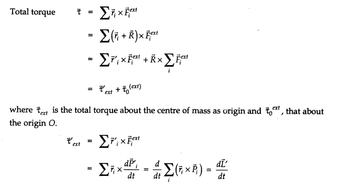
NCERT Solutions for Class 11 Physics All Chapters
- Chapter 1 Physical World
- Chapter 2 Units and Measurements
- Chapter 3 Motion in a Straight Line
- Chapter 4 Motion in a plane
- Chapter 5 Laws of motion
- Chapter 6 Work Energy and power
- Chapter 7 System of particles and Rotational Motion
- Chapter 8 Gravitation
- Chapter 9 Mechanical Properties Of Solids
- Chapter 10 Mechanical Properties Of Fluids
- Chapter 11 Thermal Properties of matter
- Chapter 12 Thermodynamics
- Chapter 13 Kinetic Theory
- Chapter 14 Oscillations
- Chapter 15 Waves
We hope the NCERT Solutions for Class 11 Physics Chapter 7 System of particles and Rotational Motion help you. If you have any query regarding NCERT Solutions for Class 11 Physics Chapter 7 System of particles and Rotational Motion, drop a comment below and we will get back to you at the earliest.